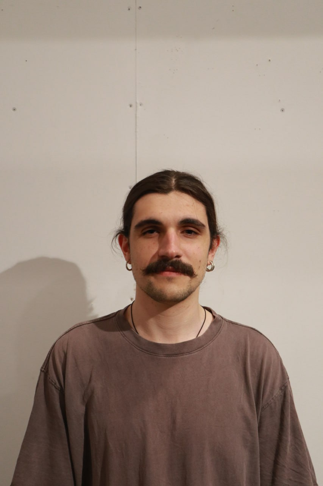

Вступ до розробки
ШІ-застосунків
Від основ ШІ до власного агента в n8n. Без досвіду програмування.
Твій результатВласний ШІ-проєкт
Переглянути курс
Для учнів 9–11 класів та абітурієнтів
Створюй власні застосунки.
Використовуй ШІ для навчання й щоденних справ.
Власний
ШІ-помічник
Точний запит.
Корисна відповідь.
Два способи почати
Від основ ШІ до власного агента в n8n. Без досвіду програмування.
Розумій технологію та став чіткі завдання ChatGPT, Claude й Gemini.
Обидва курси: 4 заняття по 1 годині.
Створювати · 4 заняття по 1 годині
Збери власного ШІ-помічника з готових блоків.
Вступ до розробки ШІ-застосунків · програма
4 заняття · по 1 годині
ШІ, LLM, автоматизація. Знайомство з n8n і перший алгоритм.
Роль, інструкції, контекст. Інтеграція з месенджером.
Документи та пошук за підходом RAG. Початок проєкту.
Завершення проєкту, презентація результату та наступні кроки.
Люди, з якими навчатимешся
Викладачі курсу
«Вступ до розробки ШІ-застосунків»
Team Lead · Gearheart
Міронов Юрій Глібович
10 років комерційного досвіду в розробці програмного забезпечення. 3 роки впроваджує ШІ-застосунки та 3 роки викладає.

Розробник програмного забезпечення
Чорнокозинський Кирило Сергійович
6 років професійного досвіду, з них 2 — у стартапі, що створює та впроваджує ШІ-рішення. Бакалавр і магістр інженерії програмного забезпечення НаУКМА.
Використовувати · 4 заняття по 1 годині
Точніше завдання — корисніша відповідь.
Розкажи про фотосинтез.
Ти — репетитор з біології. Поясни фотосинтез учню 9 класу: одна аналогія та 3 запитання для самоперевірки. Відповіді поки не показуй.
Роль + контекст + завдання + формат
Штучний інтелект на повну · теми курсу
Люди, з якими навчатимешся
Викладачі курсу
«Штучний інтелект на повну»
Lead Software Engineer in Test · EPAM Systems
9 років досвіду, понад 10 успішно реалізованих проєктів. Серед робіт — stat.gov.ua зі StatGPT. Основний стек — Java.
Має сертифікації у сфері ШІ. Спеціалізується на Claude від Anthropic, також працює з Google Gemini.
Викладач · автор наукових публікацій
14 років досвіду викладання. Автор і співавтор понад 20 наукових публікацій.
Твій наступний крок
Створюй своє. Використовуй щодня.
Або спробуй обидва напрями.
Про запис і навчання запитай представників закладів.
Університет «Україна» · приймальна комісія
+38 (067) 406-53-92 pkuu@uu.edu.uaКоледж «Освіта» · відбіркова комісія
+38 (067) 506-19-98 coll-osvita@uu.ua